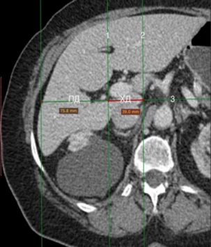

| Печень (мм, ед.Н.) | |
|---|---|
| Правая доля по СКЛ | |
| Левая доля вертикально | |
| ПД аксиально | |
| ХД аксиально | |
| Отношение ХД к ПД | |
| КТ плотность печени N | |
| МРТ плотнось фаза N | |
| МРТ плотнось п/фаза N | |
| Селезенка (мм, ед.Н.) | |
| Длина | |
| Ширина | |
| Высота | |
| Пл селезенки КТ N | |
| Индекс селезенки | |
| Оценка плотноси КТ | |
| МРТ плотнось фаза N | |
| МРТ плотнось п/фаза N | |
| Жировой идекс МРТ | |
| Отношение ХД к ПД (вероятность цирроза) | |||
|---|---|---|---|
| Норма | Погр. знач | 96% | 99% |
| < 0.6 | 0,6-0,65 | > 0,65 | > 0,73 |
| Гепатоз по плотности КТ | |
|---|---|
| Пл печени < | 40 ед.Н. |
| Пл L-S < | -9 |
| Пл L/S < | 0,9 |
| Индекс селезенки | |
|---|---|
| < 500 | Норма |
| > 500 | Cпленомегалия |
| Жировой индекс МРТ (гепатоз) | |||
|---|---|---|---|
| Норма | I стадия | II стадия | III стадия |
| < 5 | 5,0 - 33 | 33 - 66 | > 66 |
